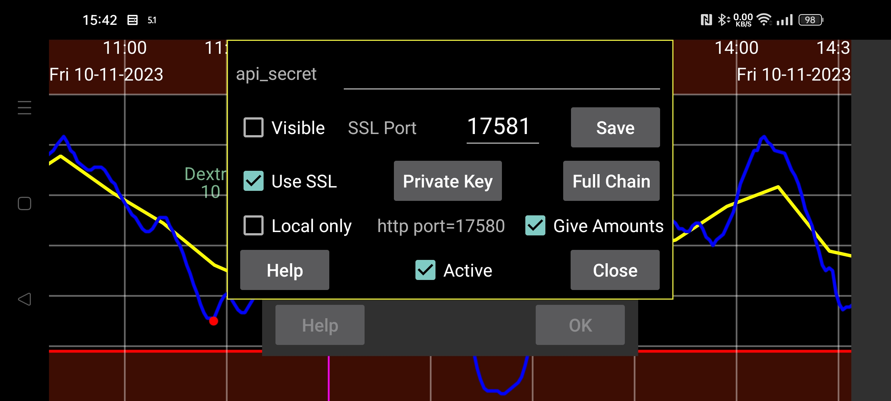

ar az be de es fa fr hi it ja ko nl pl ru sv tr uk uz zh en
Juggluco وبسرور داخلی دارد که برنامههای دیگر میتوانند از آن مقدارهای گلوکز را دریافت کنند. از این رابط میتوان برای برنامههای ساعت xDrip و بعضی برنامههای Nightscout استفاده کرد.
استفاده از برنامههای سازگار با وبسرور xDrip آسان است. کافی است گزینهٔ «فعال» را روشن کنید. پس از آن برنامهها میتوانند گلوکز را از نشانی 127.0.0.1 و درگاه 17580 بخوانند. نشانی سرور Nightscout: http://127.0.0.1:17580.
بعضی برنامههای دنبالکنندهٔ Nightscout نیز میتوانند از آن استفاده کنند. اگر «فقط محلی» خاموش باشد، xDrip، Diabox، نمایش شناور گلوکز Windows و ابزارک Owlet برای Windows، Linux و macOS با HTTP کار میکنند. در macOS برنامههای Nightscout Menu Bar، Gluco Status و Gluco Tracker (موجود در App Store) نیز همینطورند. برای Nightscouter و LoopFollow در iOS و Nightguard در iOS/watchOS نیز HTTP کافی است. (Windows Floating Glucose) (Owlet) (Nightscouter) (LoopFollow) (Nightguard)
اگر میخواهید از اینترنت به وبسرور Juggluco دسترسی پیدا کنید، باید در مودم یک درگاه را به دستگاه هدایت (Port Forwarding) کنید. راهنماهای زیر را ببینید:
«منوی میانی سمت چپ ← آینهسازی ← افزودن اتصال ← راهنما» (Add Conection)
بعضی دنبالکنندههای Nightscout فقط HTTPS را میپذیرند. برای آن، Juggluco باید کلید خصوصی و گواهی SSL معتبر برای نام میزبانی داشته باشد که با آن به برنامه دسترسی پیدا میکنید. اگر IP عمومی شما نام میزبان دارد، میتوانید با Certbot گواهی رایگان بگیرید. بدون نام میزبان، استفاده از گواهی معتبر امکانپذیر نیست. سرویسهای نام دامنهٔ رایگان مثل Freenom وجود داشتهاند؛ اما نویسنده تجربه کرده که دامنهٔ رایگانش بدون اخطار از او پس گرفته شد و ثبت دوباره پولی بود. میتوانید نام دامنه را با هزینهٔ سالانهٔ کم، مثلاً از Strato، بخرید. (Certbot) (https://www.freenom.com)
پس از نصب Certbot و هدایت درگاه ۸۰ (HTTP) مودم به رایانه، میتوانید فرمان زیر را اجرا کنید:
certbot certonly --standalone --preferred-challenges http -d myhostname
راهنمای بیشتر: نصب و استفاده از Certbot.
پس از اجرای Certbot، نویسنده کلید خصوصی را در /etc/letsencrypt/live/myhostname/privkey.pem و زنجیرهٔ کامل گواهی را در /etc/letsencrypt/live/myhostname/fullchain.pem پیدا کرده است. myhostname همان نام میزبان انتخابی است.
اگر فایلهای گواهی را از مرجع صدور گواهی SSL دریافت کردهاید، باید آنها را به Juggluco معرفی کنید. «کلید خصوصی» فایل کلید خصوصی و «زنجیرهٔ کامل» فایل گواهیها را میخواند.
اگر فقط میخواهید مقدارهای گلوکز را از یک دستگاه Android به دستگاه دیگری بفرستید، بهتر است از «آینهسازی» Juggluco استفاده کنید: «منوی میانی سمت چپ ← آینهسازی». (mirror) (Mirror)
برنامههای Android شامل AAPS، Diabetes:M، Nightwatch و Checkmate، برنامهٔ Sugarmate در macOS و iOS و Xdrip4ios، Shuggah و Cockpit در iOS برای این اتصال به HTTPS نیاز دارند. نشانی سرور Nightscout را بهشکل زیر وارد کنید: (Nightwatch) (Checkmate) (Xdrip4ios)
https://hostname:port
hostname نام میزبانی است که گواهی معتبرش را به Juggluco دادهاید. port درگاهی است که در مودم به درگاه تعیینشده در این صفحه (پیشفرض ۱۷۵۸۱) هدایت کردهاید.
AAPS نیز میتواند وبسرور Juggluco را بهعنوان سرور Nightscout به کار ببرد. در AAPS گزینهٔ NSClientV3 را انتخاب کنید و موارد زیر را تنظیم کنید:
بهعنوان توکن دسترسی Nightscout، مقدار api_secret تعیینشده در اینجا را وارد کنید؛
گزینهٔ «Connect to websockets» را خاموش کنید؛
در بخش «Synchronization» تمام بارگذاریها را خاموش کنید و فقط گزینههای زیر را روشن بگذارید:
دریافت و بازیابی دادههای گذشتهٔ CGM؛
دریافت انسولین؛
دریافت کربوهیدرات؛
دریافت رویدادهای درمانی؛
همهٔ «تنظیمات پیشرفته» را خاموش کنید.
اگر «مقدارها» را با زمانی قدیمیتر از موارد ثبتشدهٔ قبلی درج کنید، AAPS ممکن است رویدادهای درمانی تکراری داشته باشد. این مشکل هنگام استفاده از رابط V3 با سرور Nightscout که بارگذاریهای V3 را از Juggluco میگیرد نیز رخ میدهد.
گاهی AAPS تنها پس از توقف اجباری و راهاندازی دوباره شروع به درخواست دادههای درمانی از سرور میکند.
وبسرور را میتوان روی رایانهٔ Linux نیز اجرا کرد. در این حالت، دادهها را از اتصال «آینهسازی» با Juggluco دستگاه متصل به حسگر دریافت میکند: نسخهٔ خط فرمان. (mirror connection) (https://www.juggluco.nl/Juggluco/cmdline)
تلفن دیگری میتواند از طریق آینهسازی یا بهعنوان دنبالکنندهٔ Nightscout (مثلاً iPhone) به این سرور متصل شود. اگر برنامهٔ Nightscout با این وبسرور سازگار نیست، به نویسنده خبر دهید؛ شاید با تغییرهای کوچکی درست شود. برنامههای iOS با نام Nightscout و Nightscout X به پیادهسازی خاصی از سرور Nightscout وابستهاند و با Juggluco کار نمیکنند.
«api_secret»: تعیین میکند دنبالکنندهها چه مقداری را در سرآیند HTTP با نام api-secret بفرستند. این رمز وقتی بهصورت توکن Nightscout یا هش SHA1 در سرآیند api-secret فرستاده شود نیز پذیرفته است. از Juggluco 7.1.15 میتوان رمز را در نخستین بخش مسیر URL سرور وارد کرد. مثلاً اگر رمز xyz و نشانی سرور http://hostname:port باشد، میتوان از http://hostname:port/xyz استفاده کرد. (Nightscout
token)
«نمایان»: رمز را نشان میدهد.
«درگاه»: درگاه شبکهٔ وبسرور HTTPS را مشخص میکند؛ مقدار پیشفرض ۱۷۵۸۱ است.
«ذخیره»: تغییرهای رمز یا درگاه را ثبت میکند.
«استفاده از SSL»: اتصال HTTPS را فعال میکند. برای این کار باید «کلید خصوصی» و «زنجیرهٔ کامل» گواهی نام میزبان را وارد کنید.
«کلید خصوصی»: فایل حاوی کلید خصوصی را انتخاب کنید؛ همانطور که در بالا توضیح داده شد.
«زنجیرهٔ کامل»: فایل حاوی زنجیرهٔ کامل گواهیها را انتخاب کنید.
«فاصله»: حداقل فاصلهٔ پیشفرض میان مقدارهای گلوکز بر حسب ثانیه؛ معمولاً ۲۷۰ ثانیه است. درخواستکننده میتواند آن را با گزینهٔ interval= تغییر دهد. به مستندات وبسرور مراجعه کنید.
«فقط محلی»: وبسرور HTTP را فقط از همین دستگاه (127.0.0.1) قابل دسترسی میکند. این محدودیت برای HTTPS اعمال نمیشود.
«ارسال مقدارها»: اجازه میدهد مقدارهای ثبتشده از نشانی http://127.0.0.1:17580/api/v1/treatments?count=3 دریافت شوند. ابتدا باید معنای هر برچسب را تعیین کنید. پیشتر این دستهبندی با LibreView مشترک بود، اما از نسخهٔ 4.18.0 میتوان دستههای متفاوتی برای LibreView و این وبسرور داشت. xDrip از این رابط به دو روش میتواند «مقدارها» را دریافت کند: (http://127.0.0.1:17580/api/v1/treatments?count=3)
در بخش «Hardware Data Source» گزینهٔ «Nightscout Follower» را انتخاب کنید، «Follow URL» را http://127.0.0.1:17580 بگذارید و «Download Treatments» را روشن کنید. (http://127.0.0.1:17580)
یا منبع دیگری برای سختافزار، مثلاً «Libre (patched app)»، برگزینید. در «Settings ← Cloud Upload ← Nightscout Sync (REST-API)» نشانی «Base API URL» را http://somekey@127.0.0.1:17580/api/v1/ قرار دهید و «Download treatments» را روشن کنید. بارگذاری به Juggluco ممکن نیست، پس فقط اطلاعات درمانی دریافت میشوند و ممکن است پیام خطا دربارهٔ ارسال ببینید.
اگر «فقط محلی» خاموش باشد، میتوانید بهجای 127.0.0.1 از IP شبکهٔ خانگی تلفن استفاده کنید؛ یا با هدایت درگاه مودم به ۱۷۵۸۰، از IP عمومی آن بهره ببرید. اگر گواهی معتبر و کلید خصوصی را برای نام میزبان تلفن وارد و «استفاده از SSL» را روشن کرده باشید، میتوانید با HTTPS و درگاه تعریفشده در این صفحه به همان نام میزبان متصل شوید.
برای انتقال اطلاعات درمانی به Diabetes:M دو راه دارید: دادههای Juggluco را به LibreView بفرستید و با «Download Glucose data» آنها را ذخیره کنید، سپس در Diabetes:M از «Data ← Import from other sources ← Freestyle» وارد کنید؛ یا گواهی معتبر برای نام میزبان عمومی تلفن بگیرید و در Diabetes:M از «Link external source» نوع Nightscout را با نشانی https://yourhostname:Port اضافه کنید. در اینجا yourhostname نام میزبان دارای گواهی و Port همان درگاه این صفحه است. ظاهراً همگامسازی خودکار نیست و باید در Diabetes:M خودتان «Sync» را بزنید.
«فعال»: وبسرور در حال اجراست.
برای اطلاعات بیشتر دربارهٔ فرمانهای پیادهسازیشده در وبسرور Nightscout/xDrip برنامهٔ Juggluco، مستندات وبسرور را ببینید.